MGADC08 ADC Mezzanine
Descriptions
The test are divided in two phase: bench tests and IceBoard tests.
Bench tests
These tests are performed on a standalone board, before it is mounted on a carrier, to make sure a defective test will not damage our carrier. The tests are:
Power-supply impedance, to catch shorts
Smoke test: the supply is enabled and the current and voltage are measured; the output is turned off immediately if something is wrong
IceBoard tests
These tests are performed on an IceBoard after the mezzanine is mounted on it. The tests are:
EEPROM programming
Power rails
SPI: the I/O expander (including the user LEDs) and the PLL
Ramp on the high-speed data lines
S11 return loss of each ADC input
Running the tests
Bench tests of the MGADC08 ADC mezzanine, in qc/MGADC08/mgadc08_bench_tests.py.
cd qc/MGADC08
python mgadc08_bench_tests.py
Testing Instructions

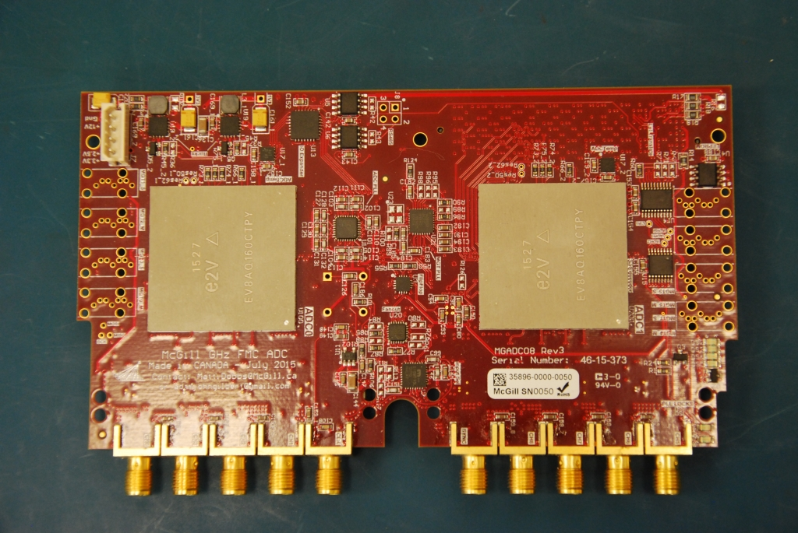
MGADC08 mezzanine
Impedance
Connect the SMA quick-connect cable to one SMA port on the mezzanine to provide ground.

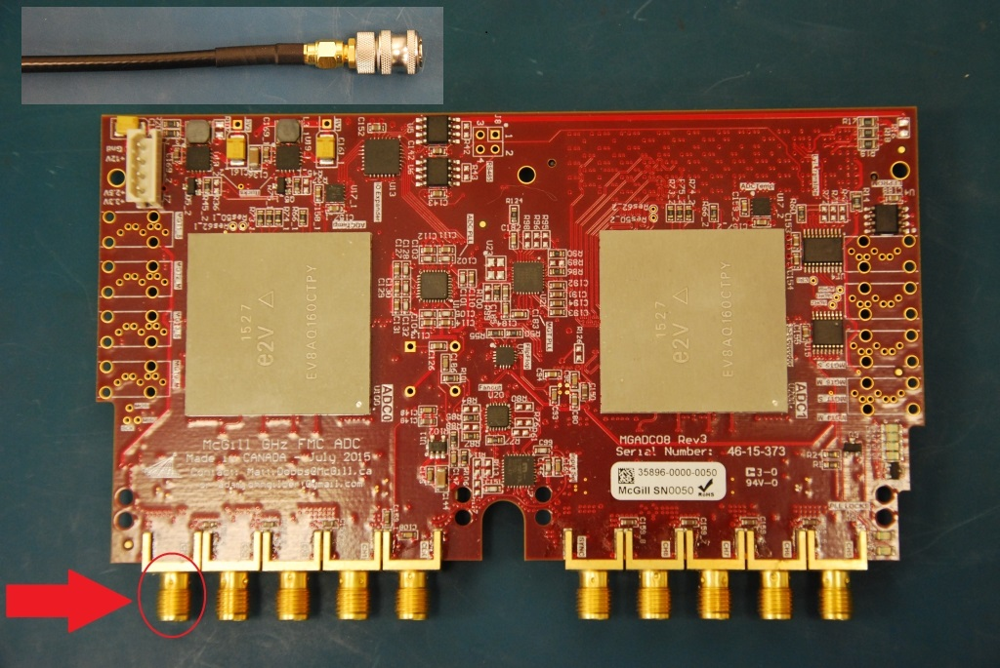
Quick-connect SMA ground location
Use the red probe to measure impedance at the test points below.

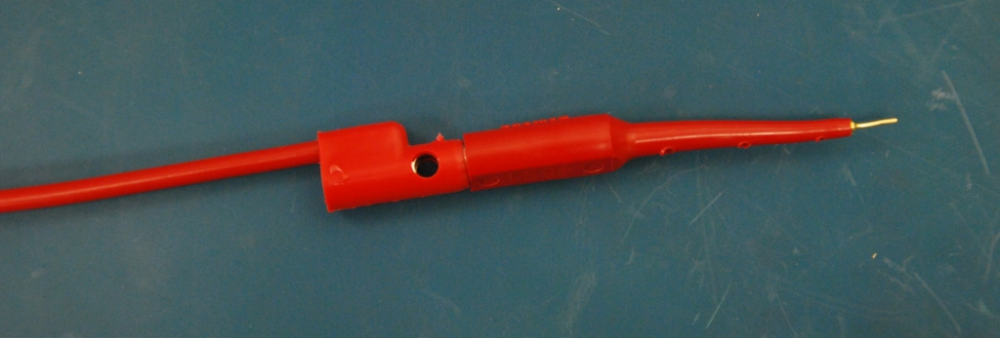
Red probe

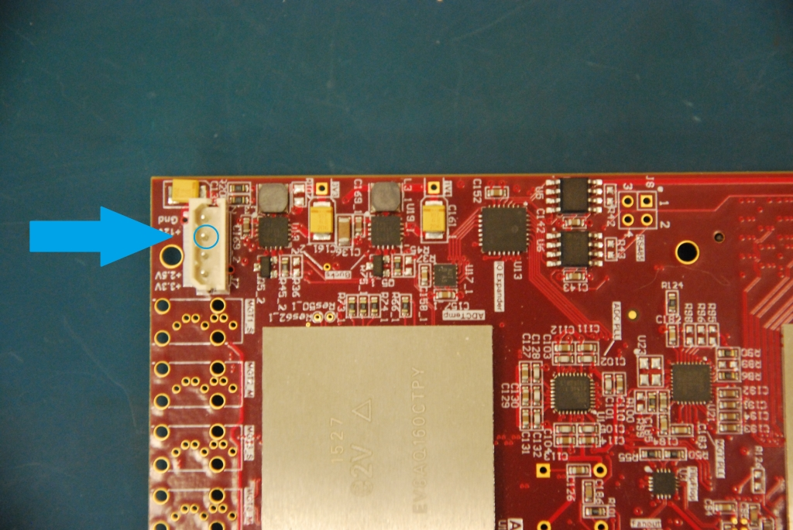
12 V probe spot, J7 pin 2

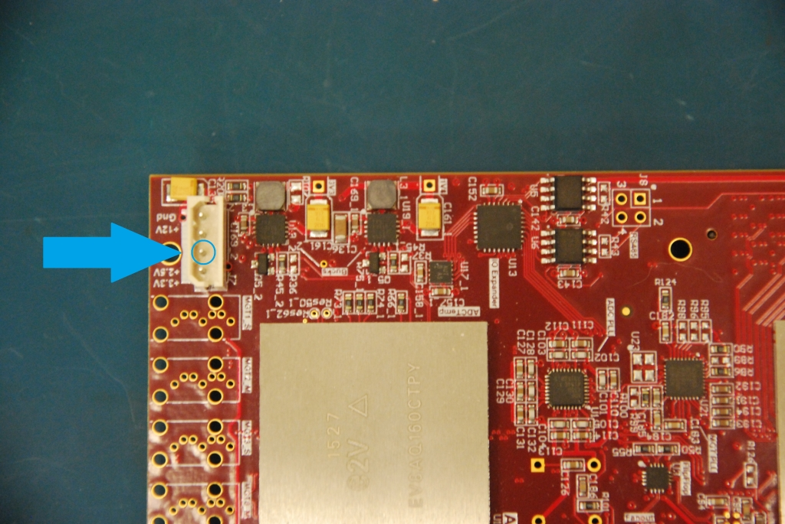
2.5 V probe spot, J7 pin 3

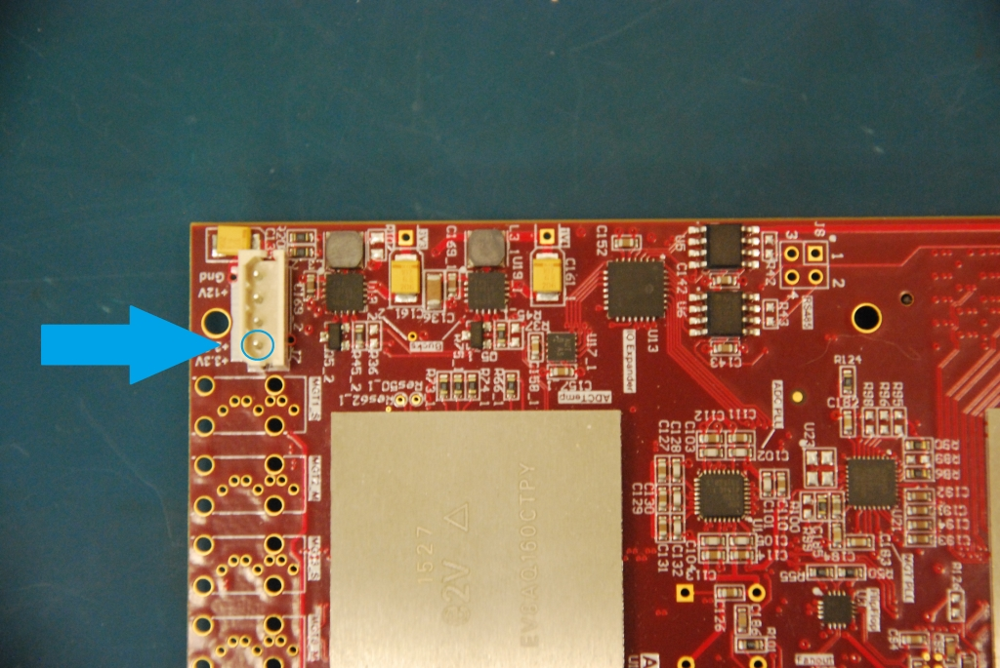
3.3 V probe spot, J7 pin 4

3.3 V buck test point

1.8 V buck test point
Smoke test
Connect the SMA quick-connect cable to one SMA port to provide ground, then connect the power cable.

Quick-connect SMA ground location

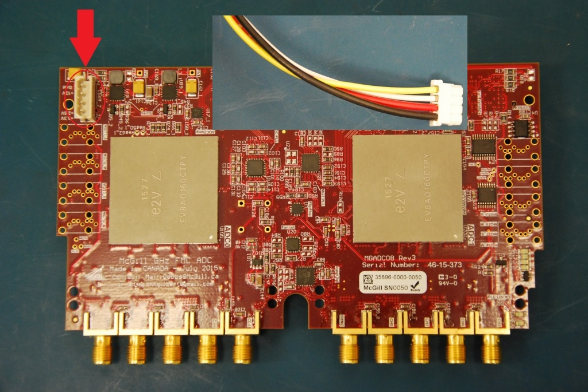
Powering the mezzanine
Check the power LED on the back of the mezzanine, then measure the buck voltages with the red probe.

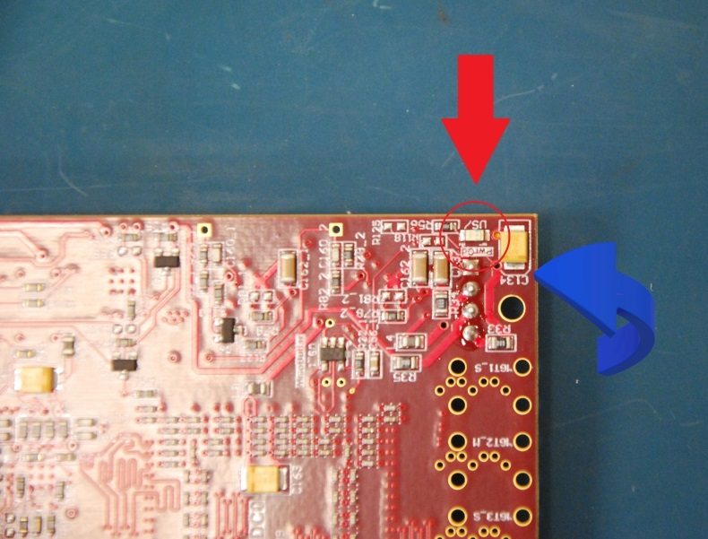
Power LED

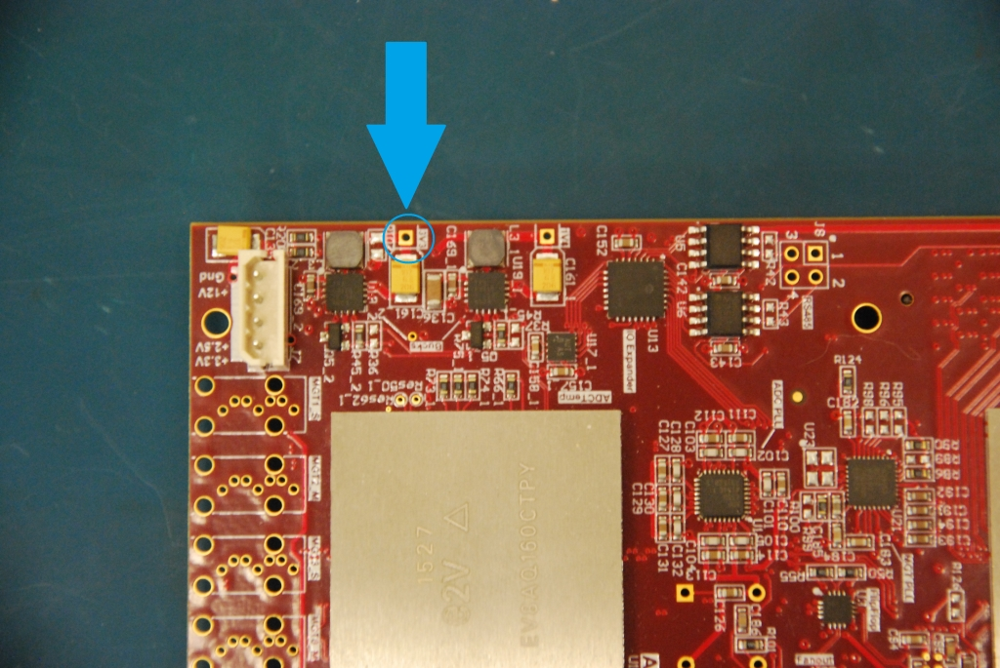
3.3 V buck test point

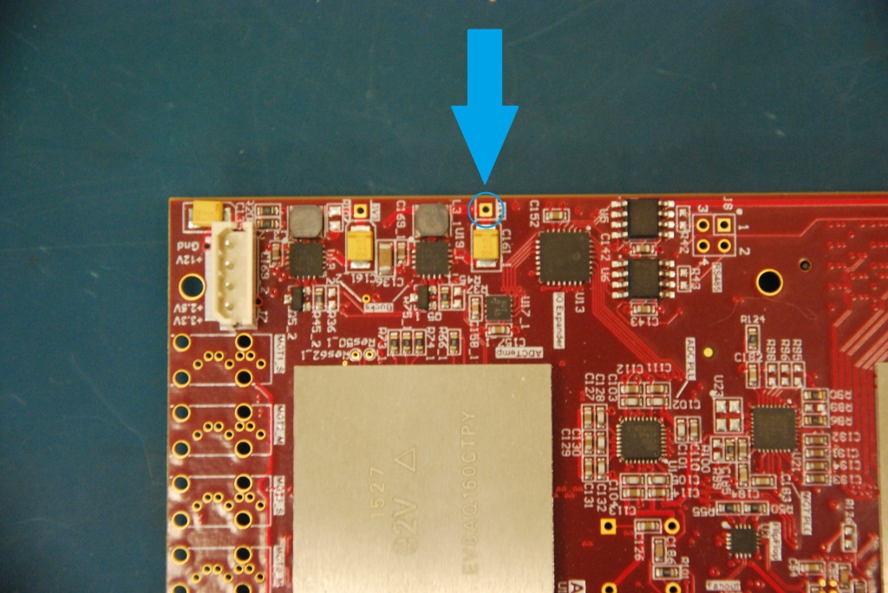
1.8 V buck test point
On an IceBoard
The remaining tests need the mezzanine on an IceBoard that can talk to the test computer: both Ethernet cables, a valid SD card, the FPGA fan, and the backplane with its power cord. An FMC extender cable keeps the mezzanine off the motherboard connector; changing mezzanines directly on that connector wears it out.

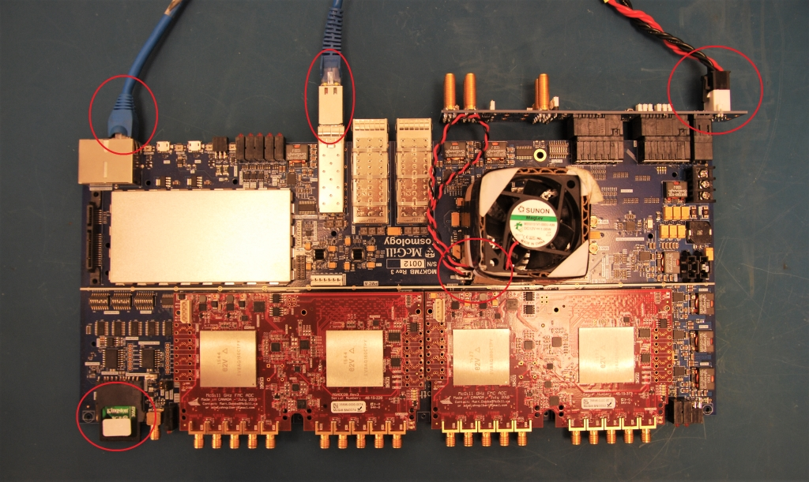
Setup when a carrier board is needed
EEPROM
Use the carrier setup above.
Power
Use the carrier setup above.
SPI and PLL
Use the carrier setup above. Confirm that the user LEDs blink.

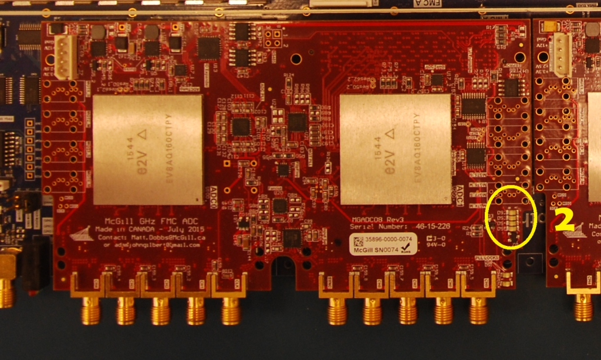
Blinking LED locations
Ramp
Use the carrier setup above.
S11
Connect the SMA quick-connect cable to the front SMA ports in channel order 1 through 8. On the mezzanine the connectors run 4, 3, 2, 1 and then 8, 7, 6, 5.

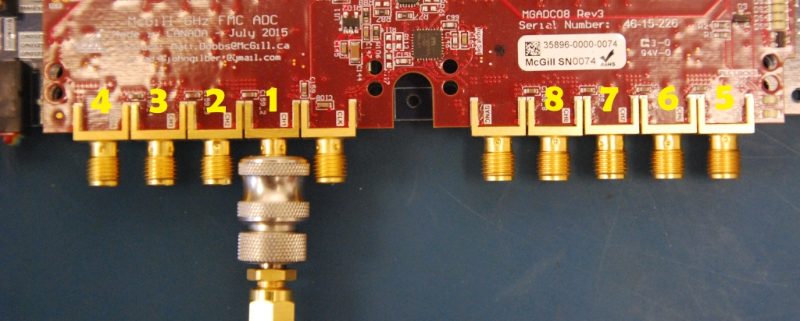
Channel ordering